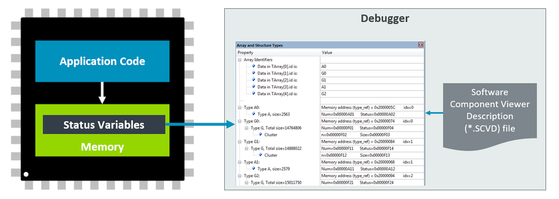
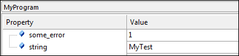

|
CMSIS-View
Debugger Views for Status and Event Information
|


|
|
CMSIS-View
Debugger Views for Status and Event Information
|
|
The Component Viewer reads specific memory locations from the target hardware using a standard debug unit that is connected via JTAG or SWD to the CoreSight Debug Access Port (DAP). The address of these memory locations is typically defined by symbols that represent variables, arrays, or starting point of linked lists. The *.SCVD file specifies these symbols and customizes the formatting in the Component Viewer window of the debugger.

Component Viewer Usage Example provides instructions on how to enable Component Viewer in a project.
Benefits of the Component Viewer:
The following steps enable views for static information of software components in the µVision debugger. Other tools might use different ways to accomplish this.
For User Code:
For Pre-annotated software components:
The software packs for MDK-Middleware, CMSIS, CMSIS-FreeRTOS already contain the relevant *.SCVD files.
For examples on how to write SCVD files, refer to the Examples section.
The *.SCVD file can be used to format static information of the application using the /component_viewer/objects.
Example code that is stored in the file MyTest.c (the file name is important for static variables).
The following MyTest.scvd file reads static program information from the variables in the above code snippet:
In the µVision Debugger this *.SCVD file is specified in the dialog Options for Target -> Debug -> Manage Component Viewer Description Files. Click on Add Component Viewer Description File and add the related *.SCVD file.

Using the SCVD file, µVision debugger shows static information about the program. The related view opens with View - Watch Windows - MyProgram.
